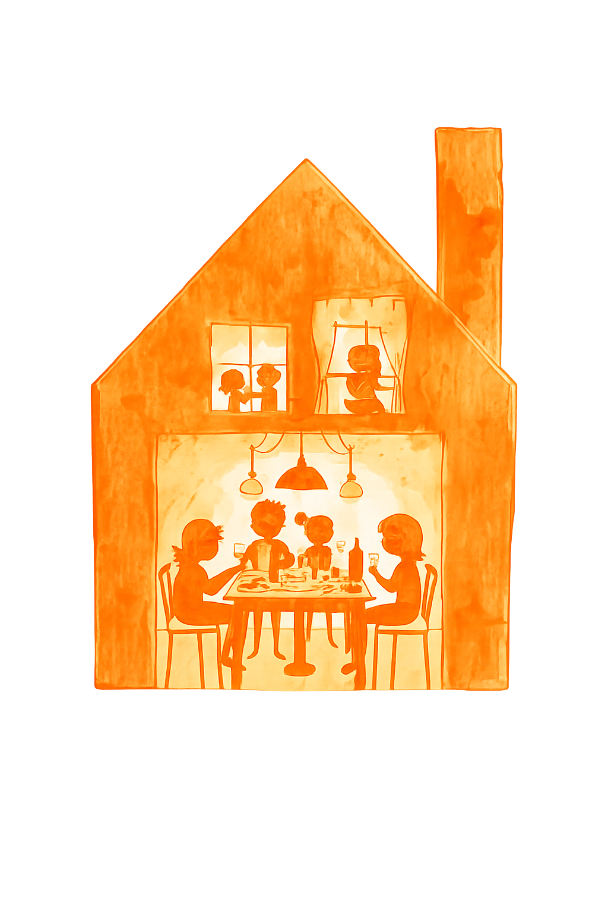
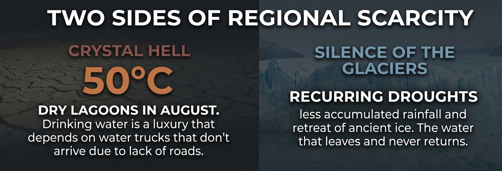
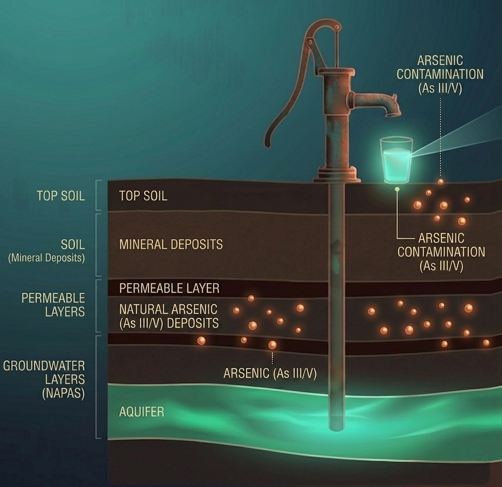
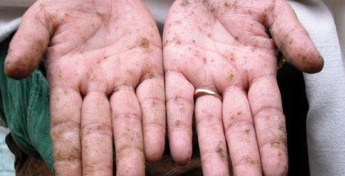

Consume water polluted with fecal waste
“The crisis is not only about scarcity, it is also a public health issue. Each year, preventable diarrheal diseases such as cholera, dysentery, and typhoid cause 505,000 deaths worldwide and a silent tragedy that primarily affects children in vulnerable communities.”
Today, we are facing an upcoming wave of emerging contaminants:
microplastics, pharmaceutical residues, and pesticides.
These chemical compounds persist in water and accumulate in the food chain,
representing an unknown long-term threat to human health and nature.

Live in informal settlements with inadequate access to water.
Quality is a lottery depending on the region. An uneven system with multiple providers.

"Invisible, odorless, tasteless but present"
Argentines are exposed daily
Arsenic in Argentina does not come from factories; it is a natural component of the earth. This geological element (in its forms As III and As V) dissolves from rocks and contaminates groundwater sources on which entire communities depend.
There are various methods to reduce arsenic levels in water, such as:
Reverse osmosis , with an efficiency ranging from 90% to 99%. It is ideal when the water also contains high levels of salts or fluoride.
Adsorption (iron-based filters): purification systems using granular media chemically bind natural arsenic. However, high concentrations of iron or manganese in well water may cause premature clogging.
The "steel wool method" is specifically useful in rural areas where groundwater is the only source. The iron in the steel wool oxidizes and traps natural arsenic, which is then filtered through a cloth.

Cutaneous Phase: Damage begins in the skin, with lesions, roughness, and pigmentation alterations.
Internal Phase: Arsenic impacts vital organs, leading to cardiovascular and respiratory damage.
Critical Phase: Long-term exposure may lead to cancer, particularly affecting the skin, lungs, and bladder.
